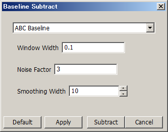

While a spectrum/chromatogram is displayed, select [Processing] in the menu bar and then select [Basic Data Manipulation] > [Baseline Subtract] from the drop down menu.
The Baseline Subtract dialog appears.
The Baseline Subtract dialog can also be displayed by clicking the
 icon in the toolbar.
icon in the toolbar.
Edit the settings.
Click [Apply].
The baseline is displayed on the spectrum/chromatogram. You can check if the settings you have set work as expected.
Click [Subtract].